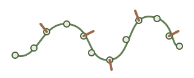
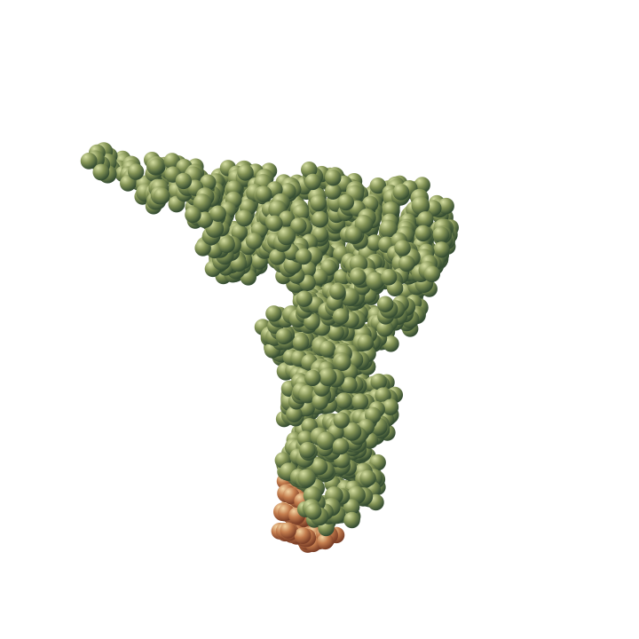
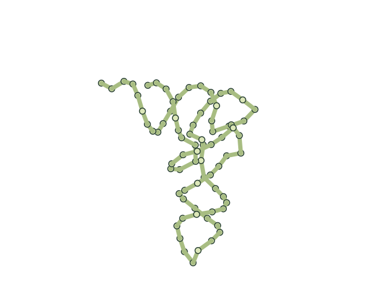
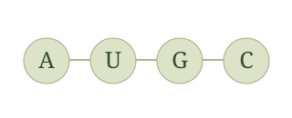
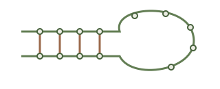
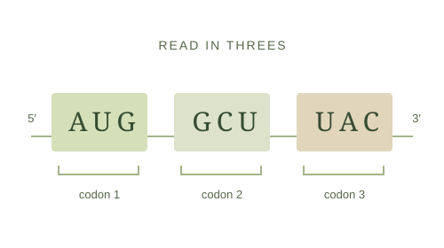
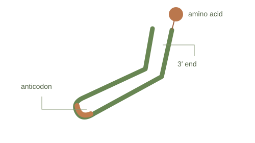
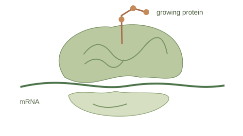

A flexible strand
RNA usually has a single strand. Its backbone alternates ribose and phosphate, and can fold into stems and loops.
A small molecular notebook
A strand folds, finds its shape, and gets to work. Looking closely helps us understand how life works at a scale we cannot see.
Get closer to the moleculeStructure, four bases, and three protagonists.

The starting idea Sequence matters. So does shape.
01 / Look closer
In a flat drawing, tRNA often looks like a cloverleaf. In space, its arms organize into an L shape.

This tRNA helps add phenylalanine to a protein. One end carries the amino acid; the other recognizes a codon in messenger RNA.
Notice this
The anticodon occupies just three positions on the strand: 34, 35, and 36. Highlight it to find it.
02 / The essentials
RNA stands for ribonucleic acid. These are the building blocks of the vocabulary.

RNA usually has a single strand. Its backbone alternates ribose and phosphate, and can fold into stems and loops.

Adenine, uracil, guanine, and cytosine. Their letters, A, U, G, and C, let us write the sequence. RNA also contains modified bases.

Interactions between different parts of the strand help shape it. That structure lets RNA recognize other molecules and do a job.
03 / Teamwork
Making a protein takes a message, an adapter, and a meeting place. These three types of RNA play those roles.
Messenger RNA
mRNA carries a copy of the information in a gene. During translation, the ribosome reads its codons: groups of three nucleotides that specify amino acids or stop signals.
Remember it this way It is the message being read.

Transfer RNA
tRNA connects a codon with its corresponding amino acid. Its anticodon pairs with mRNA, while its 3′ end carries the amino acid that will be added to the protein.
Remember it this way It is the adapter that makes the delivery.

Ribosomal RNA
rRNA forms the structural and catalytic core of the ribosome, together with proteins. It helps position tRNAs and form bonds between amino acids.
Remember it this way It helps build the protein.

And they are not the only ones: other RNAs, for example, help regulate gene expression.
For further reading
The molecular illustration and explorer use coordinates from the same experimental record.